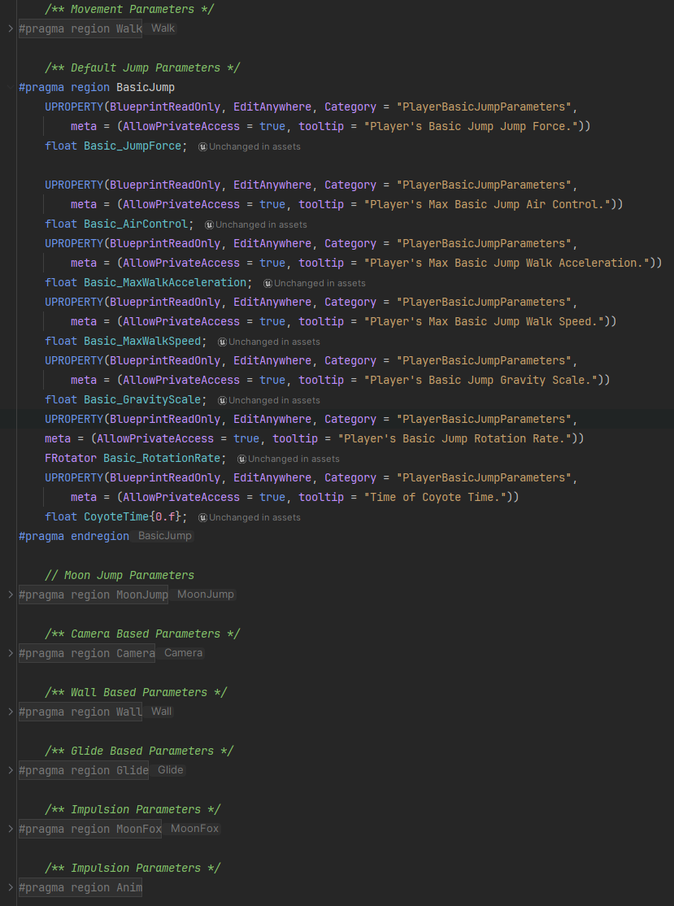
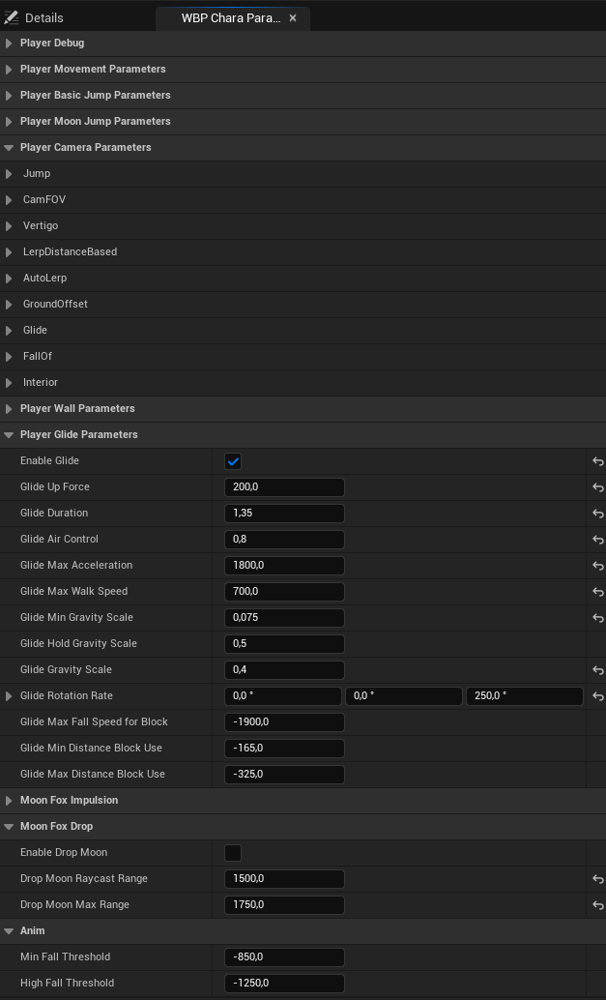

Following a catastrophe caused by mankind, the Moon, awakened in the form of a small luminous ermine, has fallen from the sky.
Play as Nova, a resident of the city, and embark on a poetic journey through its streets.
You must guide the Moon to the summit of the Tower of the Eternal. Use the powers of the astral creature, your last hope to return the Moon to the sky.
Context:
Nova is a third-person 3D platformer, mixing exploration and puzzle-solving and designed to be played on PC with a gamepad support.
It's my third-year project, as part of a team of 10 students, I serve as the lead gameplay programmer in charge of the 3C, gameplay systems, the main character rigger, tool and shaders developer.
As a challenge and to further improve my skills, I decided to develop this project using only C++.
Trailer:
3C:
Camera Base:
To develop this camera, I used several references such as Jusant, Journey, Stray, and Nier : Automata. It gave me a strong base to code all these systems.
First of all, the goal was to obtain a Smooth, Soft, & Reactive camera in order to enhance the contemplative aspect while being handy for platforming.
We then chose a 3rd Person Camera with a slight offset to offer a clear view of Nova and the surroundings, helping to have a better visibility and ease the navigation.
Finally, I added Zooms, Unzooms, FOV Changes, and a slight dumping to add dynamism and impact to Player's actions while not being too sensitive.
All these effects are handled by a contextual system in a component.
Camera Dynamic Systems:
Inspired by Jusant, I added a dynamic system to automatically add an offset to the camera when player is looking
upward to let him have the best view as possible.
Same for the next one, my main reference was Nier : Automata with its Rear Placement. I then made the camera repositioned itself behind
the Player after a small delay without camera input.
Player can then be fully focused on their movement and avoid unnecessary inputs to replace the camera.
Just like all the references used before and Sky : Children of Light, I made a Custom Spring Arm Component to
gives full control of it (add Damping, Camera Lag, Rotation Lag, ...).
After colliding with an object, the camera will slowly goes back to the default position, avoiding sudden snapping and allowing a smooth distancing.
Camera Event Systems:
I also developed Camera Event Systems such as Focus & Sequencer whose had to highlight important elements such as Door, Frescoes, & Receptacles
while showing objective or action consequences.
Panorama & Contemplative were used to enhance the environment by offering a wide and clear views while reinforcing important sequences like before a temple.
And finally, Interior. The main goal behind this system was to enhance immersion by offering a more suitable camera to close-space while pacing the game.
Game Mechanics:
During development, we tried several mechanics such as a Lunar Jump, & the possibility to Grab a wall to jump from it.
We finally decided to stay with a Glide, a Mantle, and an Interaction.
For the glide, my main reference was Infamous : Second Son. I decided to smooth & reduce impulsion force to give while smoothing
global render and giving more control while gliding.
The Mantle was designed to be dynamic to stay in the action. It's usable everywhere and it's handle feet and hands placement with a Control Rig.
Finally, the Impulsion. Our goal was to have a pleasing spammable interaction, that don't block player visibility.
Game Systems:
One of my job was also to ensure the game was correctly working.
I made different systems such as sequencers handler, receptacles, bulbs, light changing, capacities enablers, etc.
Tools:
Rope:
To develop the rope system in Nova, I used a spline-based approach to procedurally place a mesh along a defined path.
I implemented custom start and end meshes that automatically align with the rope’s orientation for visual consistency.
To support the level art team, I added functionality to populate the spline with an array of decorative meshes such as foliage or lanterns
at any point along the rope.
For wall-fixed ropes, I made an optional piton spawning system to enhance realism and environmental integration.
Barrier:
I implemented a system using splines to dynamically place meshes along them, allowing for flexible and efficient level art.
Additional options were developed to toggle custom start/end meshes, as well as separator meshes between barriers, providing designers with greater control over visual layout and modularity.
Player Parameters Menu:
In order to ease Game Designer's workflow, I created a custom in-editor Menu to display, sort, quickly modify, and save all related Player's Parameters such as Camera, all kind of Movement, or even Interaction.
This tool combine Data Asset and Editor Utility Widget, enabling live parameter adjustments even during game simulation


Shaders:
Foliage:
To reinforce the bond between the Moon and the Nature, I developed a reactive foliage system that responds to Moon presence and interaction.
Key features include:
- Glow effects driven by Material Parameter Collections, using custom masks, alpha blending, hue shifts, and noise functions for a magical, dynamic appearance.
- Distance Field interactions allowing grass and plants to bend naturally as the player approaches.
- A custom wind function, built for reusability, applied across various environmental elements like flags, bells, lanterns, and carillons for a unified aesthetic and a working system.
- When the player interacts near foliage, both wind force and glow intensity increase, enhancing the link between the environment and the character while giving a visual feedback.
Water:
I created a light wave function for the fountain of the game to simulate water movement while creating a disturbance around player's leg by using distance field.
Rig:
One of my primary responsibilities on Nova was to rig the main character, ensuring both expressive control and smooth real-time performance in Unreal Engine.
Key tasks included:
- Building a standard character rig for animation, including FK/IK systems for both low, and upper body.
- Implementing corrective controllers to maintain proper cloth deformation and enhance outfit integrity during movement.
- Rigging the hair with physics integration directly in Unreal Engine, allowing for dynamic, responsive, and realistic motion.
- Creating and integrating blendShapes to support facial expressions and emotional range specially for cutscenes and camera close-ups.